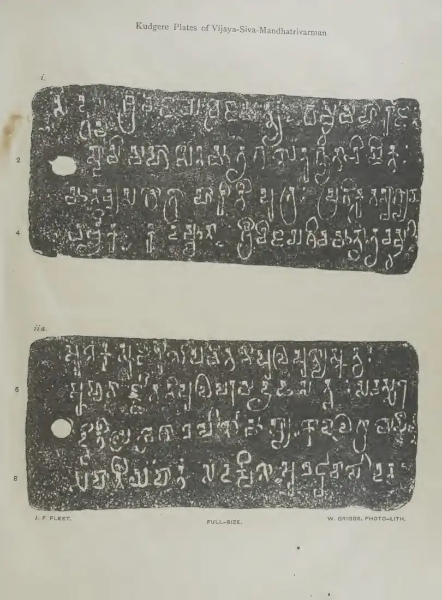

Two Kadamba Grants
TWO KADAMBA GRANTS.
BY F. KIELHORN, PH.D., LL.D., C.I.E.; GÖTTINGEN.
Both these grants were discovered by Mr. B. L. Rice, C.I.E., Director of Archæological Researches in Mysore, and are edited here, with his kind permission, from ink-impressions made in 1892 by Dr. Fleet from the original plates, which Mr. Rice had been good enough to send to him for examination. Dr. Fleet has placed the impressions at my disposal, and has also supervised the preparation of the accompanying photo-lithographs.
A.—KŪDGERE PLATES OF VIJAYA-ŚIVA-MĀNDHĀTRIVARMAN.
The second year.
These plates were obtained by Mr. Rice at Kūdgere in the Shikārpur tāluka of the Shimoga district of Mysore, and were first publicly mentioned in his Report for 1890-1. A summary of their contents has been already given by Dr. Fleet, in his Dynasties, second ed., p. 290.
These are three copper-plates, the first and last of which are inscribed on one side only, and each of which measures about 6 5/8" broad by 3" high. The plates are quite smooth, their edges being neither fashioned thicker nor raised into rims. They are thin; but, the engraving being shallow, though otherwise quite good, the letters do not shew through on the reverse sides at all. The interiors of the letters, here and there, shew marks of the working of the engraver's tool. Various marks and faint lines on the margins and between the lines of writing, in my opinion, render it very probable that the plates originally bore another inscription. The ring on which the plates are strung seems to be of brass, not of copper; it is a plain one, about thick and 2 7/8" in diameter. It had already been cut when the grant came into Dr. Fleet's hands. There is no seal, and no indication about the ring of one having ever been attached to it. The weight of the three plates is 13 oz., and of the ring, 1 1/4 oz.; total, 14 1/4 oz.—The writing is well preserved. The size of the letters is about . The characters are of the 'box-headed' type of the southern alphabet, and in their general appearance, among Kadamba inscriptions,
1 Or 'the preceptor of the three worlds.'
2 Viz. the history of the Chalukyas.—In the original verse observe the Famakas at the ends of the first and second, and of the third and fourth Pādas (jinavéśma and ravikirttih). The locative artha-vidhau is a good instance of a nimitta-saptamt.
3 I purposely omit from my translation the line which follows in the original, and which is a later addition to the poem. The first part of it enumerates six villages, the revenues of which apparently were assigned to the temple of Jinēndra founded by Ravikirti. The concluding part of it, which speaks of boundaries, I do not understand.
resemble most those of the Dèvagere plates of the fourth year and the Halsí plates of the Mahárája Mrígéšavarman (Ind. Ant. Vol. VII. p. 37, and Vol. VI. p. 24, Plates). As regards individual letters, I would draw attention to the very clear and distinct form of đh in driđha, l. 6 (as compared with the sign for đ in Kaunđinya, l. 9); to the form of the Dravidian l in Kolála, l. 7; and to the fact that the subscript t—while in the conjunct kt it is denoted by the ordinary sign for t (without the loop) used in this inscription, and in nt by the sign with the loop—in the conjunct tt is written in both ways, as may be seen e.g. from sva-dattán and para-dattán, in line 14. I would lay some stress on this last point, because we have the same two ways of writing the conjunct tt also in the Dèvagere plates of the third year of the Mahárája Mrígéšavarman, in which the single t, as in the present inscription, is always denoted by the sign without the loop;1 (compare ibid. Vol. VII. p. 35, Plate, nivarttanam in line 12, and the same word and dattaván in line 13). For final consonants the full signs, written below the line, are used in dattaván, l. 12 pramádát, l. 13, and -bhák, l. 16. Final m is written in the same way in siddhum, l. 1; but in other places where my text shews a final m, that letter is denoted by a small hook, engraved at the bottom of the line.—The language of the inscription is Sanskrit, and, with the exception of two benedictive and imprecatory verses, the text is in prose. In respect of orthography, I need only mention that the word brahma is written bramha, in line 10. The phraseology of the text is the usual one, except that some rare technical terms occur in lines 8 and 9.
The inscription records that the Dharmamahárája of (the family of) the Kadambas, Vijaya-Šiva-Mándhátrivarman, at Vaijayanti (i.e. Banavási), on the full-moon tithi of Vaisákha in the second year (of his reign), granted some land at the village of Kolála to a spiritual teacher (perhaps the king's own teacher), named Dèvašarman. The charter (patṭiká) was written by the rahasy-ádhikríta,2 or private secretary, Dâmôdaradatta.
The genealogy of Mándhátrivarman is not given; and as his name does not occur in the published inscriptions, his relation to the known princes of the same family cannot for the present be determined with any certainty. But I may say that a comparison of this inscription with the other Kadamba inscriptions would lead me to connect Mándhátrivarman more closely with Mrígéšavarman than with any other Kadamba prince. Palaeographical reasons for this statement have been given above. Other reasons are, that both princes, and they only, are described as residing at Vaijayanti; that one is called Vijaya-Šiva-Mrígéšavarman,3 and the other Vijaya-Šiva-Mándhátrivarman; and that, corresponding to the epithets of Mándhátrivarman in the present inscription, anéka-sucharit-ópachíta-vipula-punya-skundha and áhav-árjita-vipula-parama-driđha-sattva, we have, in Mrígéšavarman's inscriptions, anéka-janmántar-ópárjita-vipula-punya-skandha (Ind. Ant. Vol. VII. p. 35, l. 4, and p. 37, l. 6 of the text), and áhav-árjita-parama-ruchira-driđha-sattva (ibid. p. 35, l. 5) or naik-áhav-árjita-parama-driđha-sattva (ibid. p. 37, l. 10). All this looks to me as if Mándhátrivarman might have been either, as a younger brother of Šântivarman, the immediate predecessor of Mrígéšavarman, or the younger brother and immediate successor of this prince.
1 The case is different e.g. with the Halsí plates of the fifth year of the Mahárája Harivurman (Ind. Ant. Vol. VI. p. 31, Plate), where the single t is denoted by both the sign without the loop and the sign with the loop, and where tt is written in three different ways (by two signs of t without the loop; both with the loop; and the first without the loop, and the second with it).
2 The same official title (in Prákrít rahasádhikata) occurs in the Pallava inscription in Ep. Ind. Vol. I. p. 7, l. 50 of the text. The same inscription has another rare term in common with the present inscription; see below, p. 15, note 7. The rahasy-ádhikríta in other inscriptions is called simply rahasya; see above, Vol. III. p. 21, note 1.
3 See Ind. Ant. Vol. VII. p. 37, ll. 4 and 17 of the text. Mrígéšavarman is so called also in the Hitṇahebbázilu plates, Ep. Carn. Vol. IV. p. 136, No. 18. The same plates apparently have in common with the present inscription the rare term antaḥkara-vishṭika, which I have not found elsewhere. (The term parihkrita-paṅg-ḥtkóṭa in the same plates may be compared with sarvva-paṅga-parihkrita—not sarva-paṅgu-parihkrita, as printed—in line 5 of the Goa plates of Šaka-Sarnvat 532, Jour. Bo. As. Soc. Vol. X. p. 365, and Plates.)
The village of Kolála, which is mentioned in this inscription, I am unable to identify with certainty. The Madras Postal Directory shews two villages named 'Kolala,' in the Tumkûr district of Mysore,—one in the Tiptûr tâluka, post-town 'Turuvekere,' and the other in the Tumkûr tâluka, post-town 'Kolala' itself; probably Kolála is one or other of these.
TEXT.1
First Plate.
| 1 | Siddham || | Śrí-vijaya-Vaijayantyâm2 | dharmmamahárájah |
| 2 | S vâ mi - Ma hâs ê na - mâ t ṛ i g a n - â n u d h y â t - â b h i s h i k t ã h | ||
| 3 | Mâ navya-sagôtrô | Hârití-putrah | pratikríta-svâdhyâya- |
| 4 | charchchikah | Kadambânâm | śrí-Vijaya-Šiva-Mândhâtrivarmmâ |
Second Plate; First Side.
| 5 | a n ê k a-3 s u c h í (c h a) r i t-ô p a c h i t a-v i p u l a - p u n y a-s k a n d h a h | |
| 6 | âhav-ârjjita-vipula-parama-driðha-sat[t*]vah | savassarê4 |
| 7 | dvitiyê | Vaisâkha-paurnamâsyâm Kolála-grâmê símni5 |
| 8 | sa-pâníya-pâtam | sa-dakshinam a-khatvâ-vâs-audana[m]6 |
Second Plate; Second Side.
| 9 | a-bhata-pravêsam | antahkara-vipti(shtí)ka[m] | Kaunðinya- |
| 10 | sagôtrâya | datt-ânuyôgâya | Taittiríya-sabramha(hma)- |
| 11 | chârinê | Dêvašarmmanê | Modekaraní-nâma-halam |
| 12 | râja-mânêna | vimšati-nivarttanam | kêdâram da[tta]vân [|*]7 |
Third Plate.
| 13 | Pramâdât | 8adharmmâd=vâ | yô=sy=âbhiha[r]tt[â] sa |
| pâ[taka]-sa[m]yukt[ô] | |||
| 14 | bhavati [|*] | Uktañ=cha [|*] | 9Sva-dattâm para-datt[âm] vâ |10 yô harêna(ta) vasundharâm [|*] |
| 15 | shapthim(shtím) | varsha-sahasrâpi | narakê pachyatê tu sah || Yô=sya |
| 16 | abhirakshitâ | sa tat-phala-bhâk [|*] | Uktañ=cha [|*] Bahubhi11 vasudhâ bhuktâ |
| 17 | râjabhis=Sagar-âdibhih | [|*] yasya yasya yadâ bhûmih12 bhûmas=tasya tasya tadâ phala[m] [||*] | |
| 18 | [D]âm[ô]daradatêna13 | rahasy-âdhikrítêna | likhit=êyam pattikâ || |
1 From Dr. Fleet's impressions.
2 Here, and in other places below, the rules of sañdhi have not been observed.
3 Originally sû seems to have been engraved.
4 Read sañvatsarê. The alteration of ssa into tsa seems to have been made already in the original.
5 Below the s of this word originally the letter m was engraved. Read -grâma-símni.
6 Originally the full sign of m (ma) was engraved here, but, with the exception of the 'box' at the top, it has been effaced.
7 Below this line some writing—perhaps the words pramâdât adharmmâd=vâ yô=sy=â of the next line—was engraved, and cancelled again.
8 Instead of the initial a the akshara pra was originally engraved.
9 Metre, here and below: Šlôka (Anushṭubh). 10 This sign of punctuation is superfluous.
11 Read bahubhir.
12 Read bhûmis=tasya.
13 Read dattêna.
Plate 1 is bound after this page.
TRANSLATION.
(Line 1.) (Be it) accomplished ! At (the city) of victory, the famous Vaijayantî, the Dharmamahárája1—anointed after meditating on Svámi-Mahásêna and the assemblage of the Mothers, belonging to the Mânavya gôtra (and) a son2 of Hâritî, studying the requital (of good or evil) as his sacred text,3—the glorious Vijaya-Šiva-Mândhâtṛivarman of (the family of) the Kadambas, who by his many good actions has accumulated an abundant store of religious merit, and has acquired in war abundant and supreme enduring strength, on the full-moon tithi of Vaisâkha in the second year (of his reign), has given, with pouring out of water4 (and) with a present (of money), the plough-land called5 Modekaranî within the borders of the village of Kolâla, by the king's measure a field of twenty nivartanas, to the spiritual teacher6 Dêvaśarman, who belongs to the Kauṇdinya gôtra and is a student of the Taittirîya Vêda,—exempt from (the duty of providing) cots,7 abode, and boiled rice, free from the ingress of soldiers, (and) exempt from internal taxes and forced labour.8
(L. 13.) He who from wantonness or wickedness takes away this (gift), is guilty of sin. And it has been said: Whosoever should take away land given by himself or given by
1 I.e. ' the Mahárája who is devoted to religion ;' but the whole is used as a title, as dharma-mahárájá-dhirája and dharma-yuvamahárája are in Pallava inscriptions.
2 This must not be taken literally. The Kadambas generally were Hárittputras, and therefore individual Kadamba kings also have the same epithet.
3 Instead of pratikrita-svádhyáya-charchika, which occurs also in the Halší plates of the Mahárája Harivarman (Ind. Ant. Vol. VI. p. 30), other Kadamba plates have pratikrita-svádhyáya-charchaka (ibid. Vol. VII. p. 35), pratikrita-svádhyáya-charchápára (ibid. Vol. VII. p. 31; Ep. Carn. Vol. IV. p. 136; and below p. 18), pratikrita-svádhyáya-charchá-páraga (Ind. Ant. Vol. VI. p. 25, and Vol. VII. p. 33), and pratikrita-charchápára (ibid. Vol. VII. p. 37), where the word svádhyáya has probably been omitted by mistake. Since all these epithets apparently are synonymous, it will be sufficient to analyse one of them; and I select for the purpose pratikrita-svádhyáya-charchápára. Charchápára, which in the Mahábháshya on P. III. 2, 1, is given by the side of védádhyáya, ' one who studies the Vêda,' according to Haradatta denotes ' a person who repeats or studies a particular text, (charchám párayati); and svádhyáya-charchápára therefore would be ' one who studies his Vêdic text.' The word pratikrita, in previous translations of Kadamba inscriptions, has been either omitted or rendered by ' adopted,' a meaning which pratikrita cannot well convey. In my opinion, it will be safer to take the word as a substantive and in its well-known sense of ' requital, recompense,' and to regard pratikrita-svádhyáya as a Karmadháraya compound (in the sense of svádhyáya iva pratikritam or pratikritam éva svádhyáyah), so that the whole epithet would denote ' one who studies the requital (of good or evil) as his sacred text.' If this interpretation be correct, I cannot help thinking that the epithet alludes to the history of the Kadambas, as told in the Tâlgund inscription (Dr. Fleet's Dynasties, second ed., p. 286; Ind. Ant. Vol. XXV. p. 27). So long as the Kadambas were private Bráhmaṇs, it was one of their chief duties to study the sacred texts; in other words, they were svádhyáya-charchápárás. When they had become kings, it was an equally sacred duty for them to requite good and evil; to do so was, what the study of the Vêda had been to them before; and thus, having been svádhyáya-charchápárás, they then were pratikrita-svádhyáya-charchápárás.
4 The phrase sa-pânhya-pâtam, which also occurs below, p. 18, l. 17, and in Ep. Carn. Vol. IV. p. 136, is equivalent to udak-átisargêṇa, udaka-púrvam, and similar expressions. In the same sense, but occasionally misunderstood, we repeatedly meet with udakam pátetvá in the Játakas; compare e.g. Vol. III. p. 286, l. 3, udakam pátetvá adási; Vol. II. p. 371, l. 13, suvaṇṇabhimkárena pupphagandhavásitam udakam pátetvá adási; and Vol. VI. p. 344, l. 10, rájá tussitvá gandhodakapunṇam suvaṇṇabhimkáram ádáya. . . . . " gámam rájabhogena bhuñjá" ti setṭhissa hatthe udakam pátetvá. This last quotation clearly states the well-known fact that the water was poured into the hand of the donee.—With the sa-dakshiṇam of our inscription compare the sa-hiraṇya [*] in line 9 of the (spurious) Hosûr plates, Ind. Ant. Vol. VIII. p. 97.
5 Compare Ind. Ant. Vol. VI. p. 23, l. 6 of the text, where also a field has a special name (Belovara).
6 I take datt-ánuyóga to be equivalent to anuyóga-krit, which according to Goldstücker's Dictionary denotes ' an Āchârya or spiritual teacher.' Dêvaśarman was perhaps the king's own teacher.
7 Compare Ep. Ind. Vol. I. p. 6, l. 31 of the text, where also we have khaṭṭdvdsa (khatvá-dvsa), in a Pallava inscription.
8 The expression antahkara-vishtika apparently occurs also in the Hitṇahebbâgilu plates, Ep. Carn. Vol. IV. p. 136, plate iii. b, l. 1.—[With antah-kara compare antar-áyam, ' internal revenue,' and its counterpart purav-áyam, ' external revenue,' in South-Ind. Inscr. Vol. III. No. 61, text line 5 f.—E. H.]
others, he is burnt in hell for sixty-thousand years. He who preserves this (gift), shares the reward of it. And it has been said : The earth has been possessed by many kings, commencing with Sagara ; to whomsoever at any time the land belongs, to him, for the time being, belongs the reward (of a grant).
(L. 18.) This charter was written by the private secretary Dâmôdaradatta.
B.—BANNAHALİI PLATES OF KRISHNAVARMAN II.
The seventh year.
These plates were discovered about 1888, while digging at Bannahalîi in the Chikmagalûr tâluka of the Kađûr district of Mysore, and are now in the possession of the Pâtil of Halêbîd. They were first publicly noticed by Mr. Rice in his Inscriptions at Śravaṇa-Belgoła, Introduction, p. 15; and an account of their contents is given by Dr. Fleet in his Dynasties, second ed., p. 290.
These are four copper-plates, the first and last of which are inscribed on one side only, and each of which measures about broad by high. They are quite smooth, the edges being neither fashioned thicker nor raised into rims. The engraving is good, but not very deep. The letters do not shew through on the reverse sides of the plates ; they shew marks of the working of the engraver's tool, throughout.— On one of the edges, the plates are numbered, by four notches1 on plate i., three on plate ii., two on plate iii., and one on plate iv. (i.e. in exactly the reverse order) ; and near these notches there is also a single notch on each plate : whether this marking is ancient or recent, is not apparent.— The plates are strung on a ring, which had been cut already when the grant came into Dr. Fleet's hands ; it is about thick, and in diameter. The ends of the ring are secured in a seal which is roughly circular, about in diameter. About a quarter of an inch from the edge of it, there is a raised rim ; and inside this, in relief on a countersunk surface, there is a lion, standing to the proper right.2 The weight of the four plates is 1 lb. oz., and of the ring and seal, 7 oz. ; total, 2 lbs. oz.— The writing is well preserved. The size of the letters is between and . The characters belong to the southern alphabet. With those of the Halsî plates of the fifth year of the Mahârája Harivarman (Ind. Ant. Vol. VI. p. 31, Plate) they have this in common that the letter t, both when used singly and in conjuncts, is mostly denoted by the sign with the loop ; but otherwise they quite differ from those of other Kadamba inscriptions, and might, in their general appearance, rather be compared with the characters of the Chikkulla plates of Vikramêndravarman II. (above, Vol. IV. p. 196, Plate). From the photo-lithograph it will be seen that the letters are frequently finished off, or embellished, with small circles. The sva of svasti in line 1 has two such circles at the ends of the lines on the proper right ; the sti of the same word two at the bottom of the superscript i, and one at the end of the proper right stroke of s ; the ya of the following word jayaty= has two at the top ; etc. I believe, there can be no doubt that by these circles the writer has tried to imitate the little 'boxes' of the characters of such inscriptions as the Uruvupalli plates of the Pallava Yuvamahârája Vishnugôpavarman (Ind. Ant. Vol. V. p. 51, Plates), and has done this in a not very intelligent manner. A certain influence of the characters of Pallava inscriptions may perhaps be distinctly traced also in the use of the looped t already mentioned ; and in the fact that in the akshara nâ the vowel â is here denoted by a separate downward stroke, while in other Kadamba inscriptions it is nearly always written, in the ordinary way, by bending back the last downward stroke of n, in an upward direction ; compare the aksharas nâm in line 4 of the present inscription, nô in line
1 For other plates which are marked in the same manner, see Ind. Ant. Vol. XIV. p. 197.
2 I owe the above information to Dr. Fleet, according to whom the later Kâdambas, both of Hângal and of Goa, also had the sîmha-lâñchhana or lion-crest ; see his Dynasties, second ed., pp. 560 and 566. Mr. Rice finds the lion also on the seal of the Hîṇnahebbâgilu plates ; see Ep. Carn. Vol. IV. Introduction, p. 2.
17 of the Uruvupalli plates, ná in line 3 of the plates of the Pallava Simhavarman (Ind. Ant. Vol. V. p. 155, Plate), and ná in line 3 of the Halsí plates of the Kadamba Kákusthavarman (ibid. Vol. VI. p. 23, Plate).1 The usual test-letters, kh (in duhkham, l. 22), j, b² and l, are all of the earlier type; but some other letters, such as the subscript t of shtí in lines 2 and 24. the sh of śréshthiná, l. 19, and some forms of y (as in Kaikėya, l. 7, samayáchára, l. 18, yó. l. 24, and śriyá, l. 11), seem to me to present so late an appearance that, in my opinion, this inscription can hardly be placed earlier than the seventh century A.D. The Draviđian l occurs in the names Vallávi and Koła-Nallúra, l. 16; the sign of the jíhvámúliya in duhkham, l. 22; and the sign of final m, the only final consonant which occurs, in pálanam, ll. 22 and 23.—The language of the inscription is Sanskrit. After the words óń svastí, the text opens with a verse eulogizing the god Hari (Vishnu), and in lines 20-26 it contains four benedictive and imprecatory verses, ascribed to Manu; otherwise it is in prose. The main part of the text, ll. 3-17, forms a single sentence, the construction of which is not quite correct, and which, except for the phrases with which it commences, reminds one of Pallava grants rather than of other Kadamba inscriptions. The orthography does not call for any particular remarks.
The inscription is one of the Kadamba Mahárája Kríshṇavarman [II.], the son of the Mahárája Simhavarman, who was a son of the Dharmamahárája Vishnuvarman, who was begotten by the Dharmamahárája Kríshṇavarman [I.] on a daughter of Kaikėya. It records (in ll. 13-17) that, on the fifth tithi and under the nakshatra Jyéshthâ in the waxing half of the month Kárttika, in the seventh year of his reign, the king granted the village Koła-Nallúra in the Vallávi-vishaya to a Bráhmaṇ of the Kauśika gótra, named Vishnušarman; and adds (in ll. 17-20) that the king was advised (to make this donation) by the Śréshthin Haridatta of the Tuṭhiyalla gótra and pravara.
I consider it very probable that the Kríshṇavarman I. of this inscription is the Dharmamahárája Kríshṇavarman who in the Dêvagere plates of the Yuvarája Dêvavarman (Ind. Ant. Vol. VII. p. 33) is mentioned as the father of this Dêvavarman. Judging from the writing. the Dêvagere inscription undoubtedly is earlier than the present inscription; the Kríshṇavarman who is mentioned in it, like Kríshṇavarman I. of this inscription, is described as aśvamédha-yájín, 'the performer of a horse-sacrifice;' and the (in these inscriptions unusual) statement of the present grant that Vishnuvarman was Kríshṇavarman's son 'from the daughter of Kaikėya,' seems pointedly to indicate that Kríshṇavarman I. had one or more sons from another wife, and would thus agree with the fact that the Dêvagere grant is by a son of Kríshṇavarman named Dêvavarman.—The names of the Kadamba Mahárájas Vishnuvarman and Simhavarman do not occur in other inscriptions of the same family.
Of the localities mentioned, the name of the Vallávi vishaya appears to survive in 'Ballávi,' the name of a town in the Tumkúr district of Mysore, Constable's Hand-Atlas of India, Plate 34, Cc; the village Koła-Nallúra I am unable to identify.
The date does not admit of verification. Judging from a number of native calendars, the nakshatra Jyéshthâ is joined more frequently with the 4th than with the 5th tithi of the bright
1 In the Hírahađagalli plates of the Pallava Šivaskandavarman (Ep. Ind. Vol. I. p. 5, Plates) the á of ná is denoted by a line attached to the foot of n, on the proper left side; compare the word bamhaṇáṇań, in line 8. Practically the same way of writing ná we have e.g. in lines 1 and 9 of the Dêvagere plates of the fourth year of the Kadamba Mrígéšavarman (Ind. Ant. Vol. VII. p. 37, Plates). And the same sign for ná occurs in line 6 of the Halsí plates of the same king (ibid. Vol. VI. p. 24, Plate); there, however, a separate downward stroke originally was wrongly added to ná, and subsequently cancelled again. (In Prof. Bühler's Indische Paleographie, Plate VII. Col. xiii. No. 43, the uncorrected wrong form is given; the correct sign for ná is given ibid. No. 21). In the Halsí plates of the fourth year of the Kadamba Harivarman (Ind. Ant. Vol. VI. p. 30, Plate) the sign for ná which is used in the present inscription is employed once, exceptionally, in line 1.
2 The sign of b in bala, l. 1, apparently is open on the proper right; see above, Vol. V. p. 119.
half of Kârttika; but it sufficiently often goes together with the 5th as a current tithi, to render the mention of it, by itself, practically useless.1
TEXT.2
First Plate.
| 1 | Ôm3 | Svasti || | 4Jayaty=udrikta-Daityèndra-bala-vîryya-vimarddanah | [*] |
| 2 | jagat-pravrîtti-samhâra-srîshtî-mâyâdharô | Harih | [||*] | |
| 3 | Svâmi-Mahâsêna-mâtrigaṇ-ânudhyât-âbhishiktânâm | Mânavya- | ||
| 4 | sagôtrâṇâm | Hâritî-putrâṇâm | pratikrîta-svâdhyâya-charchchâpârâṇâm |
Second Plate; First Side.
| 5 | 5śrî-Kadambânâm | Krîshṇavarmma-dharmmamahârâjasya6 | asvamêdha-yâjinah | |
| 6 | anêka-samara-sainkaṭ-ôpalabdha-vijayakîrttêh | vidyâ-vinîtasya | ||
| 7 | Kaikêya-sutâyâm=utpannêna | śrî-Vishṇuvarmma-dharmmamahârâjêna | ||
| 8 | 7gandharvva-hastiśikshâ-dhanurvvêdêshu | Vatsarâj-Êndr-Ārjuna-samêna |
Second Plate; Second Side.
| 9 | śabdârttha-nyâya-vidush=ôtpâditasya8 | putra śrî-Simhavarmmâ | Kadambânâm | |
| 10 | mahârâjâ(jô) | vikrântô=nêka-vidyâ-visâradas=tasya sûnunâ | śrî-Krîshṇavarmma- | |
| 11 | mahârâjêna | sva-vîryya-bala-parâkram-ôpârjjita-râjyasrîyâ | ||
| 12 | paramabrahmaṇyêna | samyak-prajâpâla[na*]-dakshêna | kshîna-lôbhêna | |
| 13 | varddhamâna-vijayarâjya-sainvatsarê | saptamê | Kârttika-mâsê |
Third Plate; First Side.
| 14 | âpûryyamâṇa-pakshê | pañchamyâm | Jyêshṭhâ-nakshatrê | Kauśika-sagôtrâya |
| 15 | vêda-pâragâya | shatkarmma-niratâya | âhit-âgnayê | Vishṇuśarmma-nâma- |
| 16 | dhêyâya | âtma-niśrêyasârttham | Vallâvi-vishayê | Koła-Nallûra- |
| 17 | nâma-grâmô | dattaħ | sa-pânîya-pâtah9 | sarvva-parihârah[*] Tuṭhiyalla-gôtra- |
| 18 | pravarêṇa | samay-âchâra-sa[in]pannêna | svakarm-ânushṭhâna-tatparêṇa |
Third Plate; Second Side.
| 19 | râja-pûjitêna | gô-sahasra-pradâtrâ | Haridatta-śrêshṭhinâ | upadêśaħ |
| 20 | kritah[||*] | Atra Manu-gîtâ | slôkâ bhavanti || | 10Bahubhir=vvasudhâ bhuktâ |
1 A nakshatra (Uttara-bhadrapadâ) is mentioned together with a tithi (the 10th of the dark half of Kârttika) also in the date of the Dêvagere plates of the third year of the Kadamba Mrîgêśavarman, Ind. Ant. Vol. VII. p. 35; but that date is incorrect. The nakshatra either was Uttara-phalgunî (for the 10th of the dark half of Kârttika) or the tithi was the 10th of the bright half of Kârttika. Curiously, exactly the same mistake was made in the date of the Hâsân plates of Dêvarâya I. of Vijayanagara, of Šaka-Sainvat 1328; Mysore Inscr. No. 150, P.S.O.-C.I. No. 25.
2 From Dr. Fleet's impressions.
3 Represented by a symbol, which stands on the proper right margin, before the space between lines 2 and 3. The same symbol, similarly placed, we have in the Uruvupalli plates of the Pallava Yuvamahârâja Vishṇugôpavarman, Ind. Ant. Vol. V. p. 51. And the same symbol, placed before the first line of the text, occurs in the plates of the Pallava Mahârâja Simhavarman, ibid. p. 155; in the Chikkulla plates of Vikramêndravarman II., above, Vol. IV. p. 195; and elsewhere.
4 Metre; Slôka (Anushṭubh).
5 The letter ś is imperfect on the proper right side.
6 Here, and in other places below, the rules of samđhi have not been observed.
7 Read gândharvva-.
8 Since some correction is necessary in lines 9 and 10, it is simplest to alter °ditasya to °ditaħ. Similar mistakes occur in the Vakkalêri plates of Kîrtivarman II., above, Vol. V. p. 202.
9 Read -pâtam.
10 Metre, here and below: Slôka (Anushṭubh).
21 râjabhis=Sagar-âdibhih [|*] yasya yasya yadâ bhûmi[s=*] tasya tasya
22 tadâ phalam || Svamâ dâtum sumahach=chhakyamâ duhkham=any-ârttha-pâlanam [|*]
23 dânamâ vâ pâlanamâ v=êti1 dânâch=chhrêyô=nupâlanam [||*]
Fourth Plate.
24 Sva-dattâm para-dattâm vâ yô harêta vasundharâm [|*] shasbti-varsha-sahasrâni
25 ghôrê tamasi pachyatê [||*] Adbhir=ddattam tribhir=bhuktam sadbhis=cha paripâlitâm [|*]
26 êtâni na nivarttantê pûrvva-râja-kritâni cha || Yô=sya lôbhân=môhâd=v=â-
27 bhihartt[â*] sa pañcha-mahâpâtaka-2samyuktô bhavati [||*] Svasty=astu gô-brâhmañêbhyah [||*]
TRANSLATION.
(Line 1.) Ôm. Hail! Victorious is Hari (Vishnu), who crushes the strength and heroism of the haughty lord of the Daityas, (and) owns the art of upholding, destroying and creating the world.
(L. 3.) (In the family) of the glorious Kadambas, anointed after meditating on Svâmi-Mahâsêna and the assemblage of the Mothers, belonging to the Mânavya gôtra (and) sons of Hâritî, who study the requital (of good or evil) as their sacred text, (there was3) the Dharmamahârâja Krishṇavarman, the performer of a horse-sacrifice, who obtained the fame of victory in many a hard-fought battle, (and was) well-trained in learning. To him was born, from the daughter of Kaikêya, the Dharmamahârâja, the glorious Vishnuvarman, in the art of music,4 the management of elephants and the science of archery like the king of Vâtsa,5 Indra and Arjuna, learned in grammar6 and logic. He begot as his son the Mahârâja of the Kadambas, the glorious Simhavarman, valiant (and) conversant with many branches of learning.
(L. 10.) His son, the Mahârâja, the glorious Krishṇavarman, who has gained the fortune of royalty by his heroism, strength and enterprise, (and is) most devoted to religion, able to protect properly his people, (and) free from greed,—in the seventh year of his prosperous reign of victory, on the fifth tithi in the waxing half in the month Kârttika, under the nakshatra Jyêshthâ,—for the sake of his beatitude in the life to come, has given, with pouring-out of water, the village named Kola-Nallûra in the Vallâvi-vishaya, with every exemption (from taxes), to the Brâhmaṇ who keeps alive the sacred fire, named Vishnuśarman, who belongs to the Kauśika gôtra, knows the whole Vêda, (and) delights in the six duties (enjoined on Brâhmaṇs).
(L. 17.) The Śrêshthin Haridatta, of the Tuṭhiyalla gôtra and pravara, whose conduct is comfortable with his obligations, who is solely devoted to the performance of his duties (and) is honoured by the king, (and) who bestows thousands of cows,7 has advised8 (the king to make this donation).
1 After this there is a mark on the plate, perhaps intended for a sign of punctuation, which, however, is unnecessary.
2 This ka was at first omitted, and then engraved below the line.
3 In the original, lines 3-17 form a single sentence, which has been broken up here into four.
4 Some words here and below remind one of line 13 of the Junâgaḍh rock inscription of Rudradâman, Ind. Ant. Vol. VII. p. 259; for gândharva see also e.g. Râmâyaṇa, Bo. ed., II. 2, 35.
5 See South-Ind. Inscr. Vol. II. p. 357, verse 29.
6 Śabdârtha literally is 'the words and their meanings' or 'the meanings of words.' In the Junâgaḍh rock inscription the expression has generally been taken to mean 'grammar and polity.'
7 Ushavadâta gave (as alms) three hundred thousand cows; see Archæol. Surv. of West. India, Vol. IV. p. 99, No. 5, line 1.
8 Compare the Halsî plates of the Mahârâja Harivarman, Ind. Ant. Vol. VI. p. 30, l. 8 of the text.
(L. 20.) Here there are (the following) verses sung by Manu:—[Here follow four benedictive and imprecatory verses.]
(L. 26.) He who from greed or infatuation takes away this (gift), is guilty of the five great sins. May blessings rest on cows and Bráhmaṇs !1
1 Cows and Bráhmaṇs are often mentioned together in this order; compare e.g. line 15 of Rudradâman's inscription referred to above; Gupta Inscr. p. 32, l. 10 of the text; Ep. Ind. Vol. I. p. 7, l. 52, and p. 129, l. 28; South-Ind. Inscr. Vol. I. p. 39, l. 1; Râmâyaṇa, Bo. ed., I. 26, 5; III. 23, 28 (svasti gó-bráhmaṇébhyas=tu); III. 24, 21 (svasti gó-bráhmaṇândâm cha); VI. 107. 49; etc.
